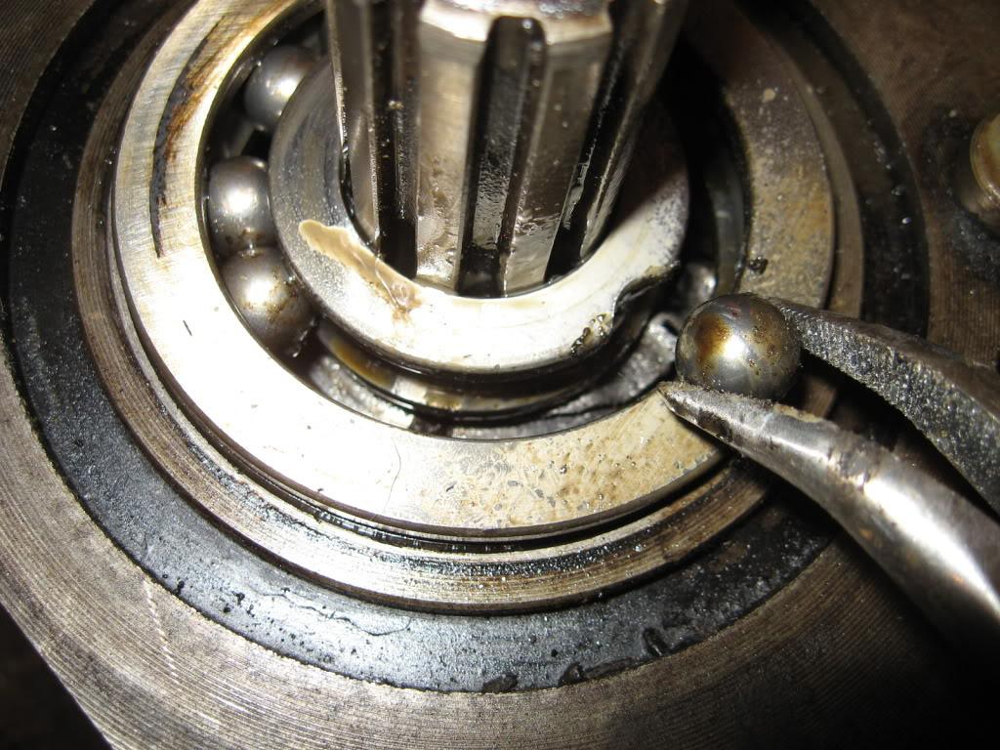

ENGINEERING FUNDAMENTALS
机械英语 · 基础课程
机械基础概论从材料到机械，
读懂工程的语言。
以专业英语认识金属材料、制造工艺与机械零部件，沿着 11 个单元逐步展开学习。
进入学习11课程单元
04主题模块
EN / 中专业英语 · 中文导引
COMPONENT STUDY 01 / 03

滚动轴承
机械英语 · 基础课程
以专业英语认识金属材料、制造工艺与机械零部件，沿着 11 个单元逐步展开学习。
进入学习
滚动轴承
加粗词为本课核心术语 / Key terms are emphasized.
选中文字后，选择高亮颜色。